8、进度管理
规划项目进度管理
1
| 为实施项目进度管理制定政策、程序，并形成文档化的项目进度管理计划的过程。主要作用是为如何在整个项目过程中管理、执行和控制项目进度提供指南和方向。
|
进度管理计划
1
| 进度管理计划可以是正式或非正式的，非常详细或高度概括的
|
定义活动
1
2
| 定义活动过程就是识别和记录为完成项目可交付成果而需采取的所有活动。主要作用是将工作包分解为活动，作为对项目工作进行估算、进度规划、执行、监督和控制的基础。
活动：为完成工作包所需进行的工作，是实施项目时安排工作的最基本的工作单元。活动与工作包时一对一或一对多的关系，即有可能多个活动或一个活动完成一个工作包。进度中最小的工作单位是活动
|
滚动式规划
1
| 是一种迭代式规划技术，即近期要完成的工作在工作分解结构最下层详细规划，而计划在远期完成的工作，在工作分解结构较高层粗略规划。他是一种渐进明细的规划方式。
|
前导图法（单代号网络图）
1
| 也称紧前关系绘图法，用于编制项目进度网络图的一种方法，使用长方形代表活动（节点），节点之间用箭头连接，以显示节点之间的逻辑关系。
|
 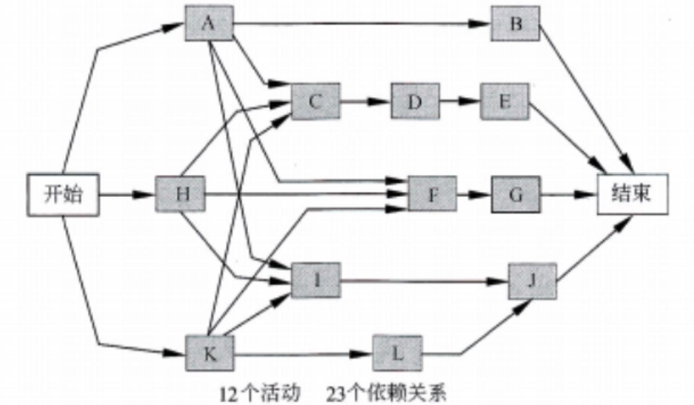
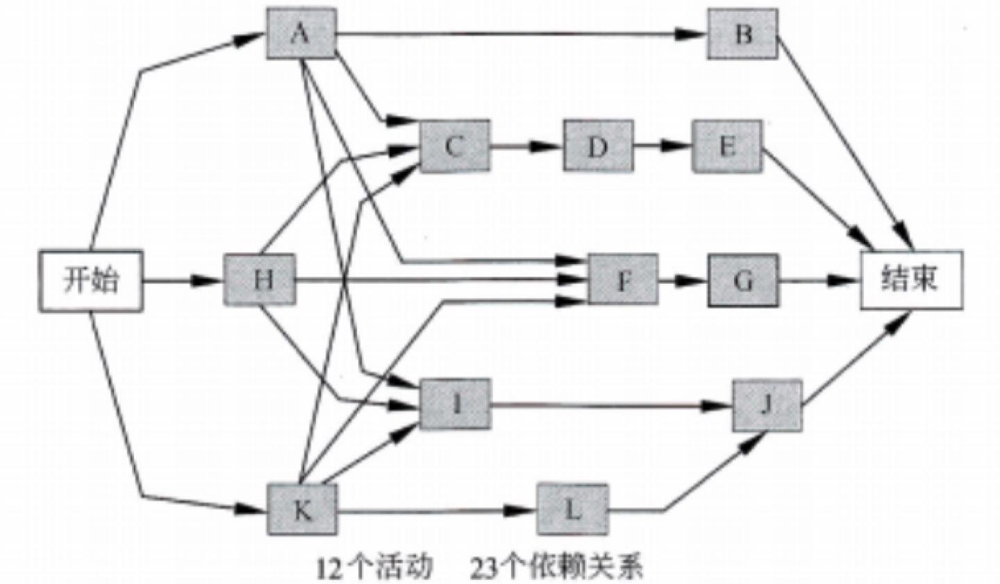
四种依赖关系：
1
2
3
4
5
6
7
8
| * 结束-开始（FS）
* 前序活动结束后，后续活动才能开始
* 结束-结束（FF）
* 前序活动结束后，后续活动才能结束
* 开始-开始（SS）
* 前序活动开始后，后续活动才能开始
* 开始-结束（SF）
* 前序活动开始后，后续活动才能结束
|
 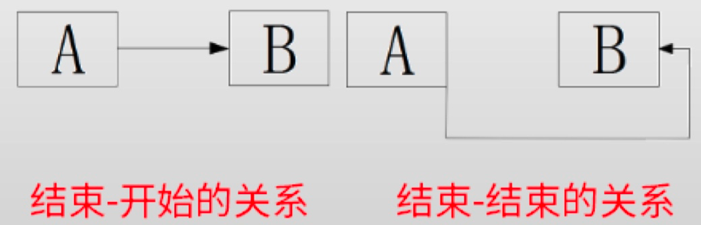
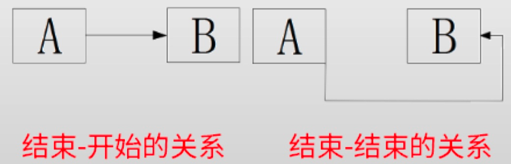
 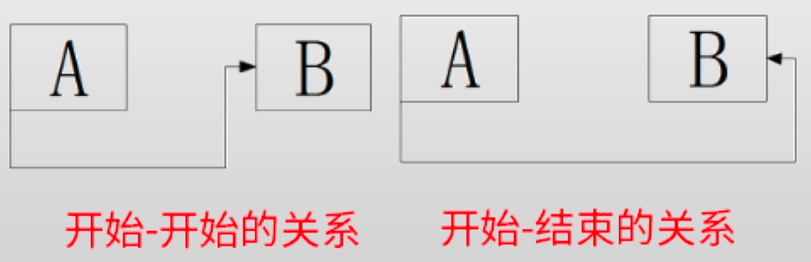
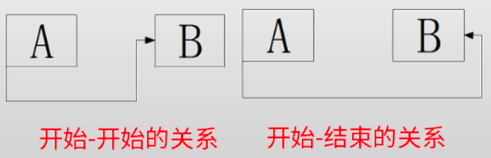
节点组成部分
 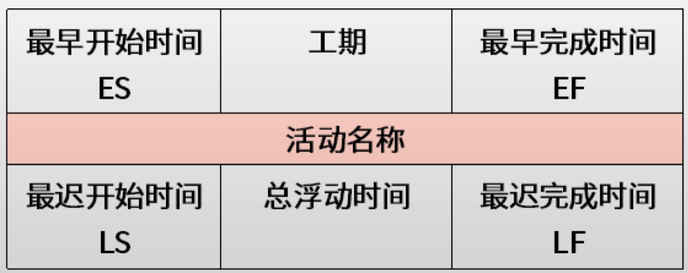
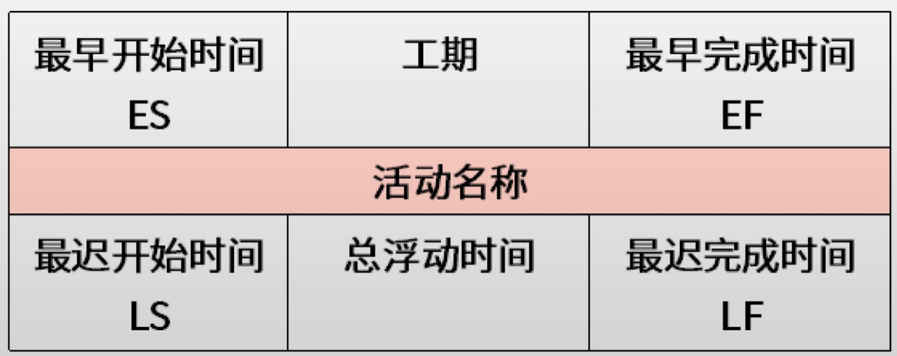
正推取最大，反推取最小
箭线图法（双代号网络图）
1
2
3
4
5
6
7
| 用箭线表示活动、节点表示事件的一种网络图绘制方法，也称双代号网络图（节点和箭线都要编号）。
原则：
* 每个活动和事件都必须有唯一的一个代号，即网络图中不会有相同的代号。
* 任两项活动的紧前时间和紧后事件代号至少有一个不同，节点代号沿箭线方向越来越大。
* 流入（流出）同一节点的活动，均有共同的紧后（紧前）活动。
虚线表示虚活动，虚活动不消耗时间也不消耗资源，只是为弥补箭线图在表达活动依赖关系方面的不足，借助虚活动，可以更好、更清楚的表达活动之间的关系
|
 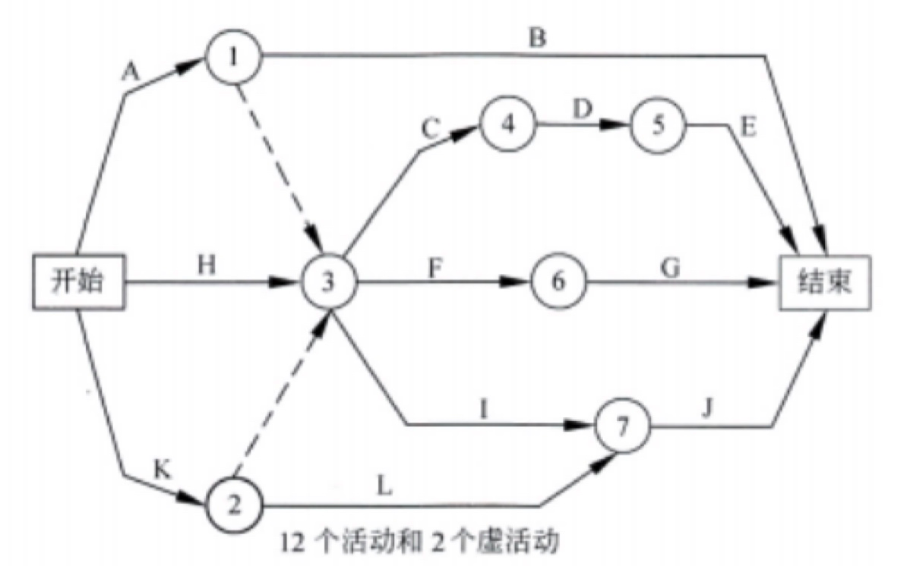
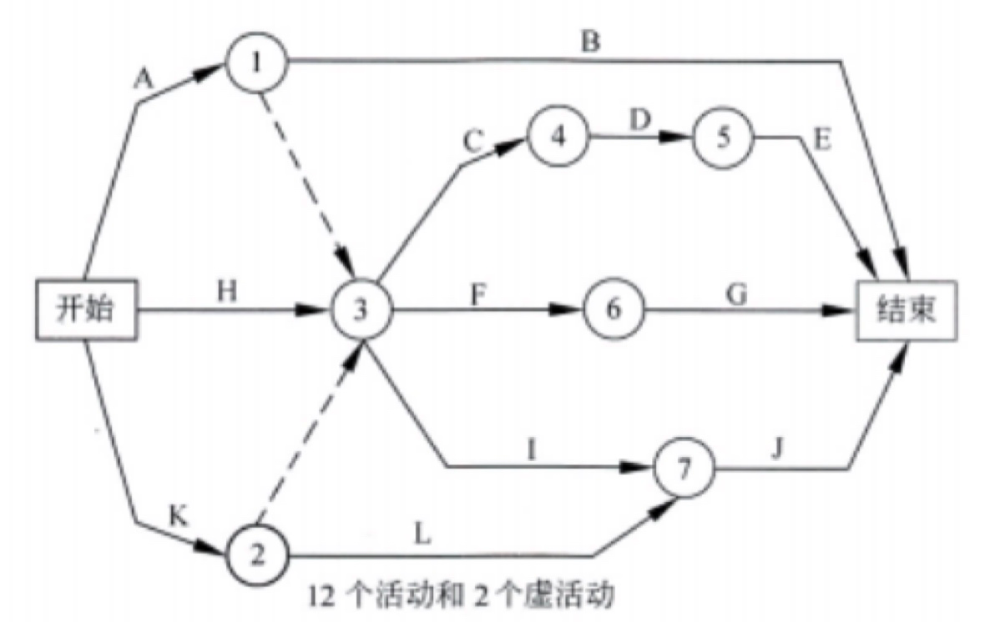
提前量和滞后量
1
2
3
4
5
| * 提前量（-）
* 相对于紧前活动，紧后活动可以提前的时间量
* 滞后量（+）
* 相对于紧前活动，紧后活动需要推迟的时间量
|
估算活动持续时间的工具与技术
1
2
3
4
5
6
| * 类比估算法
* 使用相似活动或项目的历史数据来估算当前活动或项目的持续时间或成本的技术。在项目详细信息不足，如在项目早期阶段经常使用这种技术，类比估算法成本较低、耗时较少，准确度也较低，可针对项目或项目中某个部分，也可与其他方法联合使用。
* 参数估算
* 参数估算是一种基于历史数据和项目参数，使用某种算法来计算成本或持续时间的估算技术，准确性取决于参数模型的成熟度和基础数据的可靠性。
* 三点估算
* 通过考虑估算中不确定性和风险，可以提高活动持续时间估算的准确性
|
三点估算
1
2
3
4
| PERT假定持续时间在三种估算值区间内遵循贝塔分布
* 期望时间（估算值）=（乐观时间+最可能的时间*4+悲观时间）/6
PERT认为整个项目的完成时间是各个活动完成时间之和，且服从正态分布。
* 标准差 =（悲观时间-乐观时间）/6
|
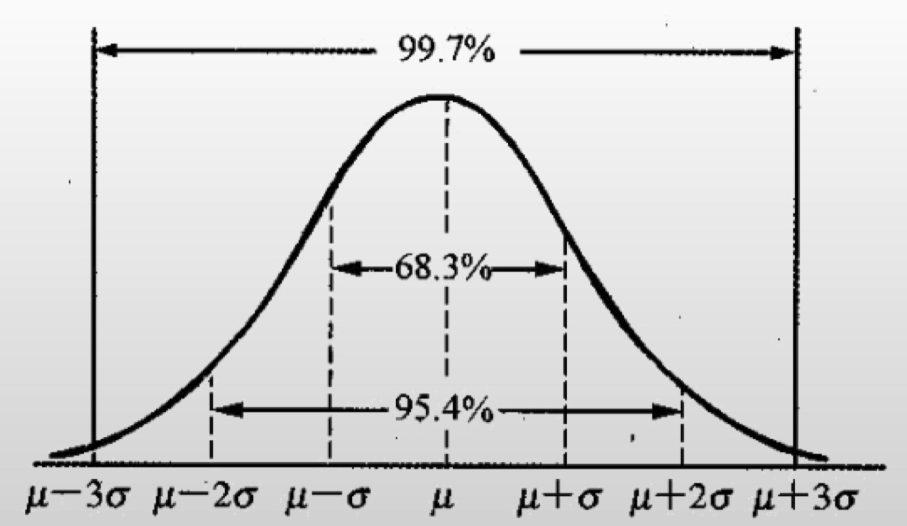
期望时间 减去或加上 1*标准差 的区间68.3%几率准确
关键路线法
1
2
3
4
5
6
7
| 关键线路法是在进度模型中，估算项目最短工期，确定逻辑网络路径的进度灵活性大小的一种方法。
* ES 最早开始时间
* EF 最早结束时间
* LS 最晚开始时间
* LF 最晚结束时间
* TF 总时差 不影响总工期的机动时间 LS-ES 或 LF-EF （下减上）
* FF 自由时差 不影响后续工作情况下的机动时间 紧后工作的ES-此活动的EF（后减前）
|
1
2
3
| * 关键路径上工作的最早开始时间等于最晚开始时间、最早结束时间等于最晚结束时间。
* 关键活动的总时差、自由时差都是0
* 自由时差 = 紧后工作的最早开始时间-此活动的最早结束时间（如有多个紧后活动，则紧后活动的最早开始时间是这些活动的最早开始时间的最早者，也就是最小者）
|
关键路线法 - 正推法
关键路线法 - 逆推法
关键链法
1
2
3
4
5
| * 帕金森定律：
* 工作会自动的膨胀占满所有可用时间。如果安排给一个任务的时间有富余，人们就会放慢节奏消耗掉所有富余时间。
* 解决方案：
* 最早开始法则，所有活动都越早越好，砍掉每个活动的安全时间，集中到路径末段，就是准备项目缓冲。
|
 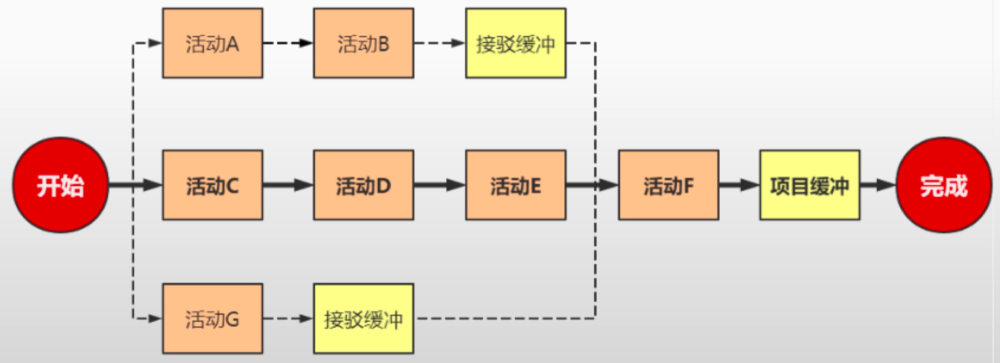v
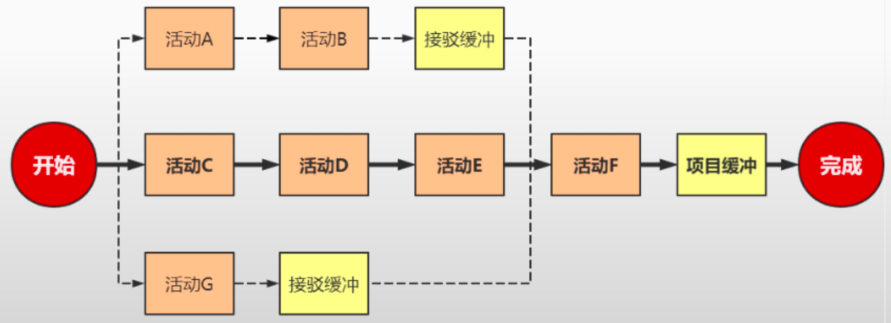v
关键路线法 VS 关键链法
1
2
3
4
| * 关键路线法
不考虑资源限制，假设资源无限，人员万能情况下理想的进度计划。
* 关键链法
用关键路径法编制出进度计划后，考虑资源的可用性，编制出资源约束型进度计划，在讲原来包含在每个活动中安全冗余时间分离加以汇总调减形成各路径的缓冲时间，添加到各条路径的末尾。基于关键线路法中人们总会在活动持续时间中增加50%的安全冗余时间的假设，把每个活动的持续时间都缩短一半，把同一条路径上个活动节省的时间汇总再减半，并把结果作为缓冲添加到该条路径的末端。
|
资源平衡 VS 资源平滑
资源平衡（会改变工期）
1
2
3
4
5
| 资源平衡式根据资源制约对关键线路法编制的初始进度计划中的活动起始时间进行调整，以使各时间的资源需求量都不超出资源的供应量。因为关键路线法不考虑资源制约，所以用关键路线法编出初步的进度计划后，就需要考虑资源制约，进行资源平衡。
* 使用场景
* 没有足够的资源来开展进度计划中的相关活动，尤其是关键路径上的活动
* 某些资源仅在特定时间可用
* 某些资源被过度分配而不堪负重（如某员工某日被安排20小时工作）
|
资源平滑（不会改变工期）
1
2
| 资源平滑是在浮动时间允许的范围内，对各时间的资源需求量进行“削峰填谷”，使之基本处于均衡水平。
* 由于资源平滑石在浮动时间内允许的范围内进行，所以不会导致项目工期延长。
|
 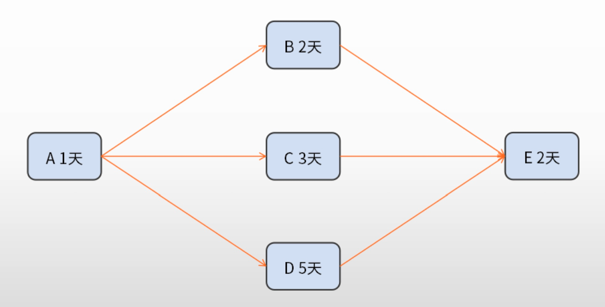
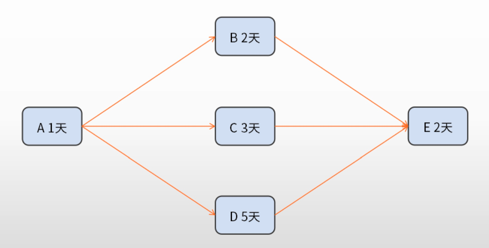
 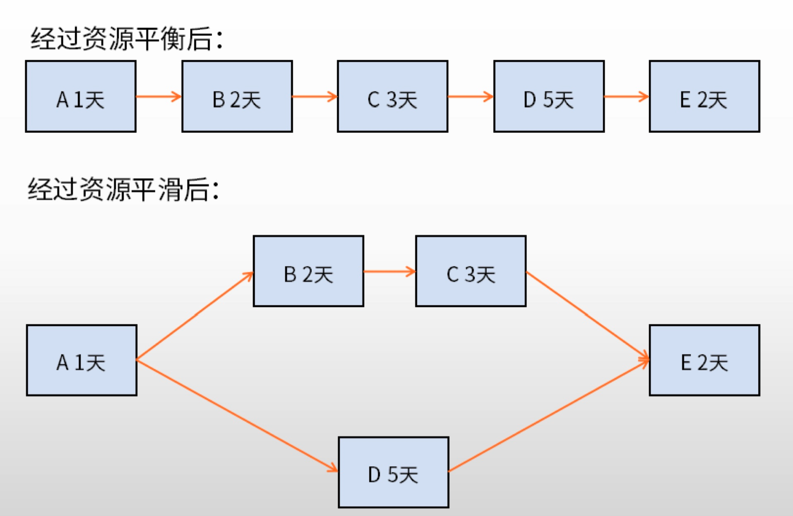
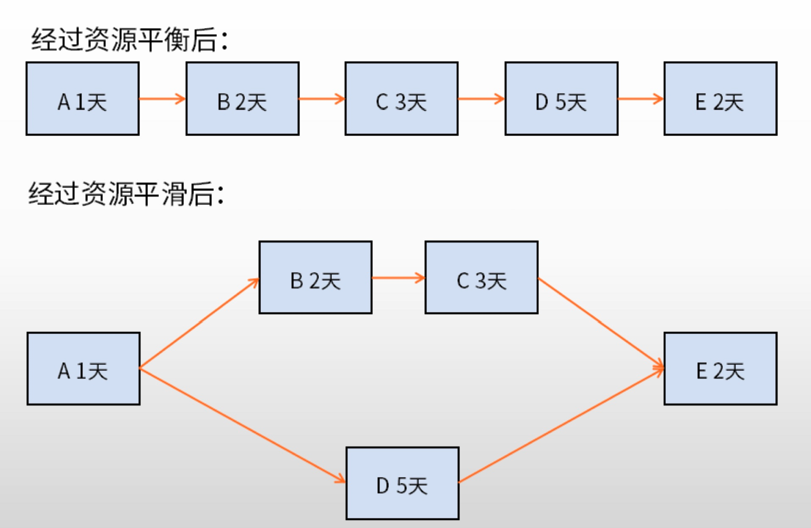
赶工 VS 快速跟进
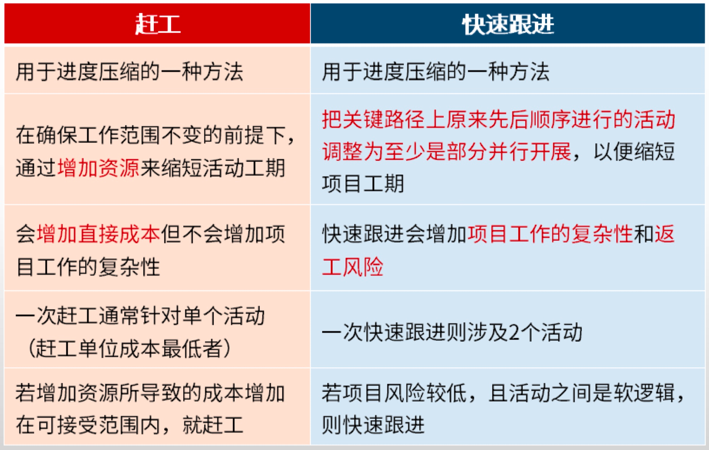
赶工：增大资源投入，用资源换时间，需要计算那个最合适
快速跟进：改变活动逻辑关系，增大项目风险
控制进度关注内容
1
2
3
4
5
6
| * 判断项目进度的当前状态
* 对引起进度变更的因素施加影响，以保证这种变化朝着有利的方向发展
* 判断项目进度是否已经发生变更
* 当变更实际发生时严格按照变更控制流程对其进行管理
进度基准的任何变更都必须经过实施整体变更控制过程的审批，控制进度是实施整体变更控制过程的一个组成部分。
|
压缩工期的方法
1
2
3
4
5
6
| * 赶工
* 快速跟进
* 投入更多的资源
* 指派经验更加丰富的人
* 减小活动范围或降低活动要求
* 通过改进方法或提高生产效率
|